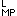

|
CHAPTER I.
The Circuit of Money-Capital .
. . . . . . . . |
25 | |
|
First Stage. M -- C .
. . . . . . . .
. . . . . . . . |
26 | |
page 25
THE METAMORPHOSES OF CAPITAL
AND THEIR CIRCUITS
THE CIRCUIT OF MONEY-CAPITAL
The circular movement[1] of capital takes place in three stages, which, according to the presentation in Volume I, form the following series:
First stage: The capitalist appears as a buyer on the commodity and the labour-market; his money is transformed into commodities, or it goes through the circulation act M--C.
Second stage: Productive consumption of the purchased commodities by the capitalist. He acts as a capitalist producer of commodities; his capital passes through the process of production. The result is a commodity of more value than that of the elements entering into its production.
Third stage: The capitalist returns to the market as a seller; his commodities are turned into money, or they pass through the circulation act C--M.
Hence the formula for the circuit of money-capital is: M--C . . . P. . . C'--M', the dots indicating that the process of circulation is interrupted, and C' and M' designating C and M increased by surplus-value.
The first and third stages were discussed in Book I only in so far as this was necessary for an understanding of the second stage, the process of production of capital. For this reason, the various forms which capital takes on in its different stages, and which it now assumes and now strips off in the repetition of its circuit, were not considered. These forms are now the direct object of our study. In order to conceive these forms in their pure state, one must first of all discard all factors which have nothing to do with the
page 26
changing or building of forms as such. It is therefore taken for granted here not only that the commodities are sold at their values but also that this takes place under the same conditions throughout. Likewise disregarded therefore are any changes of value which might occur during the movement in circuits.
M--C represents the conversion of a sum of money into a sum of commodities; the purchaser transforms his money into commodities, the sellers transform their commodities into money. What renders this act of the general circulation of commodities simultaneously a functionally definite section in independent circuit of some individual capital is primarily not the form of the act but its material content, the specific use-character of the commodities which change places with the money. These commodities are on the one hand means of production, on the other labour-power, material and personal factors in the production of commodities whose specific nature must of course correspond to the special kind of articles to be manufactured. If we call labour-power L, and the means of production MP, then the sum of commodities to be bought, C, is equal to L+MP, or more briefly C<.[¥] M--C, considered as to its substance, is therefore represented by M--C<, that is to say, M--C is composed of M--L and M--MP. The sum of money M is separated into two parts, one of which buys labour-power, the other means of production. These two series of purchases belong to entirely different markets, the one to the commodity-market proper, the other to the labour-market.
Aside from this qualitative division of the sum of commodities into which M is transformed, the formula M--C< also represents a most characteristic quantitative relation.
We know that the value, or price, of labour-power is paid to its owner, who offers it for sale as a commodity, in the form of wages, that is to say as the price of a sum of labour containing surplus-labour. For instance if the daily value of labour-power is equal to the product of five hours' labour valued at three shillings, this sum figures in the contract between the buyer and seller as the price, or wages, for, say, ten hours of
page 27
labour. If such a contract is made for instance with 50 labourers, they are supposed to work altogether 500 hours per day for the purchaser, and one half of this time, or 250 hours equal to 25 days of labour of 10 hours each, represents nothing but surplus-labour. The quantity and the volume of the means of production to be purchased must be sufficient for the utilisation of this mass of labour.
M--C<, then, does not merely express the qualitative relation indicating that a certain sum of money, say £422, is exchanged for a corresponding sum of means of production and labour-power, but also a quantitative relation between L, the part of the money spent for labour-power, and MP, the part spent for means of production. This relation is determined at the outset by the quantity of excess labour, of surplus-labour to be expended by a certain number of labourers.
If for instance in a spinning-mill the weekly wage of its 50 labourers amounts to £50, £372 must be spent for means of production, if this is the value of the means of production which a weekly labour of 3,000 hours, 1,500 of which are surplus-labour, transforms into yarn.
It is immaterial here how much additional value in the form of means of production is required in the various lines of industry by the utilisation of additional labour. The point merely is that the part of the money spent for means of production -- the means of production bought in M--MP -- must absolutely suffice, i.e., must at the outset be calculated accordingly, must be procured in corresponding proportion. To put it another way, the quantity of means of production must suffice to absorb the amount of labour, to be transformed by it into products. If the means of production at hand were insufficient, the excess labour at the disposal of the purchaser could not be utilised; his right to dispose of it would be futile. If there were more means of production than available labour, they would not be saturated with labour, would not be transformed into products.
As soon as M--C< is completed, the purchaser has at his disposal more than simply the means of production and labour-power required for the production of some useful article. He disposes of a greater capacity to render labour-power fluent, or a greater quantity of labour than is necessary for the replacement of the value of this labour-power, and he has at the same time the means of production requisite for the realisation or materialisation of this quantity of labour. In other words, he
page 28
has at his disposal the factors making for the production of articles of a greater value than that of the elements of production -- the factors of production of a mass of commodities containing surplus-value. The value advanced by him in money-form has now assumed a bodily form in which it can be incarnated as a value generating surplus-value (in the shape of commodities). In brief, value exists here in the condition or form of productive capital, which has the faculty of creating value and surplus-value. Let us call capital in this form P.
Now the value of P is equal to that of L+MP, it is equal to M exchanged for L and MP. M is the same capital-value as P, only it has a different mode of existence, it is capital-value in the state or form of money -- money-capital.
M--C<, or its general form M--C, a sum of purchases of commodities, an act of the general circulation of commodities, is therefore at the same time -- as a stage in the independent circuit of capital -- a transformation of capital-value from its money-form into its productive form. More briefly, it is the transformation of money-capital into productive capital. In the diagram of the circuit which we are here discussing, money appears as the first depository of capital-value, and money-capital therefore represents the form in which capital is advanced.
Capital in the form of money-capital is in a state in which it can perform the functions of money, in the present case the functions of a universal means of purchase and universal means of payment. (The last-named inasmuch as labour-power though first bought is not paid for until it has been put into operation. To the extent that the means of production are not found ready on the market but have to be ordered first, money in M--MP likewise serves as a means of payment.) This capacity is not due to the fact that money-capital is capital but that it is money.
On the other hand capital-value in the form of money cannot perform any other functions but those of money. What turns the money-functions into functions of capital is the definite role they play in the movement of capital, and therefore also the interrelation of the stage in which these functions are performed with the other stages of the circuit of capital. Take, for instance, the case with which we are here dealing. Money is here converted into commodities the combination of which represents the bodily form of productive capital, and this form already contains latently, potentially, the result of the process of capitalist production.
page 29
A part of the money performing the function of money-capital in M--C< assumes, by consummating this act of circulation, a function in which it loses its capital character but preserves its money character. The circulation of money-capital M is divided into M--MP and M--L, into the purchase of means of production and the purchase of labour-power. Let us consider the last-named process by itself. M--L is the purchase of labour-power by the capitalist. It is also the sale of labour-power -- we may here say of labour, since the form of wages is assumed -- by the labourer who owns it. What is M--C (=M--L) for the buyer is here, as in every other purchase, L--M (=C--M) for the seller (the labourer). It is the sale of his labour-power. This is the first stage of circulation, or the first metamorphosis, of the commodity (Buch I, Kap. III, 2a).[*] It is for the seller of labour a transformation of his commodity into the money-form. The labourer spends the money so obtained gradually for a number of commodities required for the satisfaction of his needs, for articles of consumption. The complete circulation of his commodity therefore appears as L--M--C, that is to say first as L--M (=C--M) and secondly as M--C; hence in the general form of the simple circulation of commodities, C--M--C. Money is in this case merely a passing means of circulation, a mere medium in the exchange of one commodity for another.
M--L is the characteristic moment in the transformation of money-capital into productive capital, because it is the essential condition for the real transformation of value advanced in the form of money into capital, into a value producing surplus-value. M--MP is necessary only for the purpose of realising the quantity of labour bought in the process M--L, which was discussed from this point of view in Book I, Part II, under the head of "The Transformation of Money into Capital." We shall have to consider the matter at this point also from another angle, relating especially to money-capital as the form in which capital manifests itself.
Generally M--L is regarded as characteristic of the capitalist mode of production. However not at all for the reason given above, that the purchase of labour-power represents a contract of purchase which stipulates for the delivery of a quantity of labour in excess of that needed to replace the price of the labour-power, the wages; hence delivery of surplus-labour, the fundamental condition for the capitalisation of the value
page 30
advanced, or for the production of surplus-value, which is the same thing. On the contrary, it is so regarded because of its form, since money in the form of wages buys labour, and this is the characteristic mark of the money system.
Nor is it the irrationality of the form which is taken as characteristic. On the contrary, one overlooks the irrational. The irrationality consists in the fact that labour itself as a value creating element cannot have any value, nor can therefore any definite amount of labour have any value espressed in its price, in its equivalence to a definite quantity of money. But we know that wages are but a disguised form, a form in which for instance the price of one day's labour-power presents itself as the price of the labour rendered fluent by this labour-power in one day. The value produced by this labour-power in, say, six hours of labour is thus expressed as the value of twelve hours' functioning or operation of the labour-power.
M--L is regarded as the characteristic feature, the hallmark of the so-called money system, because labour there appears as the commodity of its owner, and money therefore as the buyer -- hence on account of the money-relation (i.e., the sale and purchase of human activity). Money however appears very early as a buyer of so-called services, without the transformation of M into money-capital, and without any change in the general character of the economic system.
It makes no difference to money into what sort of commodities it is transformed. It is the universal equivalent of all commodities which show, if only by their prices, that ideally they represent a certain sum of money, anticipate their transformation into money, and do not acquire the form in which they may be converted into use-values for their owners until they change places with money. Once labour-power has come into the market as the commodity of its owner and its sale takes the form of payment for labour, assumes the shape of wages, its purchase and sale is no more startling than the purchase and sale of any other commodity. The characteristic thing is not that the commodity labour-power is purchasable but that labour-power appears as a commodity.
By means of M--C<, the transformation of money-capital into productive capital, the capitalist effects the combination of the objective and personal factors of production so far as they consist of commodities. If money is transformed into productive capital for the first time or if it performs for the first time
page 31
the function of money-capital for its owner, he must begin by buying means of production, such as buildings, machinery, etc., before he buys any labour-power. For as soon as he compels labour-power to act in obedience to his sway, he must have means of production to which he can apply it as labour-power.
This is the capitalist's presentation of the case.
The labourer's case is as follows: The productive application of his labour-power is not possible until it is sold and brought into connection with means of production. Before its sale, labour-power exists therefore separately from the means of production, from the material conditions of its application. In this state of separation it cannot be used either directly for the production of use-values for its owner or for the production of commodities, by the sale of which he could live. But from the moment that as a result of its sale it is brought into connection with means of production, it forms part of the productive capital of its purchaser, the same as the means of production.
True, in the act M--L the owner of money and the owner of lahour-power enter only into the relation of buyer and seller, confront one another only as money-owner and commodity owner. In this respect they enter merely into a money-relation. Yet at the same time the buyer appears also from the outset in the capacity of an owner of means of production, which are the material conditions for the productive expenditure of labour-power by its owner. In other words, these means of production are in opposition to the owner of the labour-power, being property of another. On the other hand the seller of labour faces its buyer as labour-power of another which must be made to do his bidding, must be integrated into his capital, in order that it may really become productive capital. The class relation between capitalist and wage-labourer therefore exists, is presupposed from the moment that the two face each other in the act M--L (L--M on the part of the labourer). It is a purchase and sale, a money-relation, but a purchase and sale in which the buyer is assumed to be a capitalist and the seller a wage-labourer. And this relation arises out of the fact that the conditions required for the realisation of labour-power, viz., means of subsistence and means of production, are separated from the owner of labour-power, being the property of another.
We are not concerned here with the origin of this separation. It exists as soon as M--L goes on. The thing which interests us here is this: If M--L appears here as a function of money-capital or money as the form of existence of capital, it is not for
page 32
the sole reason that money here assumes the role of a means of paying for a useful human activity or service; hence by no means in consequence of the function of money as a means of payment. Money can be expended in this form only because labour-power finds itself in a state of separation from its means of production (including the means of subsistence as means of production of the labour-power itself), and because this separation can be overcome only by the sale of the labour-power to the owner of the means of production; because therefore the functioning of labour-power, which is not at all limited to the quantity of labour required for the reproduction of its own price, is likewise the concern of its buyer. The capital-relation during the process of production arises only because it is inherent in the act of circulation, in the different fundamental economic conditions in which buyer and seller confront each other, in their class relation. It is not money which by its nature creates this relation; it is rather the existence of this relation which permits of the transformation of a mere money-function into a capital-function.
In the conception of money-capital (for the time being we deal with the latter only within the confines of the special function in which it faces us here) two errors run parallel to each other or cross each other. In the first place the functions performed by capital-value in its capacity of money-capital, which it can perform precisely owing to its money-form, are erroneously derived from its character as capital, whereas they are due only to the money-form of capital-value, to its form of appearance as money. In the second place, on the contrary, the specific content of the money-function, which renders it simultaneously a capital-function, is traced to the nature of money (money being here confused with capital), while the money-function premises social conditions, such as are here indicated by the act M--L, which do not at all exist in the mere circulation of commodities and the corresponding circulation of money.
The purchase and sale of slaves is formally also a purchase and sale of commodities. But money cannot perform this function without the existence of slavery. If slavery exists, then money can be invested in the purchase of slaves. On the other hand the mere possession of money cannot make slavery possible.
In order that the sale of one's own labour-power (in the form of the sale of one's own labour or in the form of wages) may constitute not an isolated phenomenon but a socially decisive premise for the production of commodities, in order that money-capital may therefore perform, on a social scale, the above
page 33
discussed function M--C<, historical processes are assumed by which the original connection of the means of production with labour-power was dissolved -- processes in consequence of which the mass of the people, the labourers, have, as non-owners, come face to face with the non-labourers as the owners of these means of production. It makes no difference in this case whether the connection before its dissolution was such in form that the labourer, being himself a means of production, belonged to the other means of production or whether he was their owner.
What lies back of M--C< is distribution; not distribution in the ordinary meaning of a distribution of articles of consumption, but the distribution of the elements of production itself, the material factors of which are concentrated on one side, and labour-power, isolated, on the other.
The means of production, the material part of productive capital, must therefore face the labourer as such, as capital, before the act M--L can become a universal, social one.
We have seen on previous occasions[*] that in its further development capitalist production, once it is established, not only reproduces this separation but extends its scope further and further until it becomes the prevailing social condition. However, there is still another side to this question. In order that capital may be able to arise and take control of production, a definite stage in the development of trade is assumed. This applies therefore also to the circulation of commodities, and hence to the production of commodities; for no articles can enter circulation as commodities unless they are produced for sale, hence as commodities. But the production of commodities does not become the normal, dominant type of production until capitalist production serves as its basis.
The Russian landowners, who as a result of the so-called emancipation of the peasants are now compelled to carry on agriculture with the help of wage-labourers instead of the forced labour of serfs, complain about two things: First, about the lack of money-capital. They say for instance that comparatively large sums must be paid to wage-labourers before the crops are sold, and just then there is a dearth of ready cash, the prime condition. Capital in the form of money must always be available, particularly for the payment of wages, before production can be carried on
page 34
capitalistically. But the landowners may take hope. Everything comes to those who wait, and in due time the industrial capitalist will have at his disposal not alone his own money but also that of others.
The second complaint is more characteristic. It is to the effect that even if one has money, not enough labourers are to be had at any time. The reason is that the Russian farm-labourer, owing to the common ownership of land in the village community, has not yet been fully separated from his means of production and hence is not yet a "free wage-labourer" in the full sense of the word. But the existence of the latter on a social scale is a sine qua non for M--C, the conversion of money into commodities, to be able to represent the transformation of money-capital into productive capital.
It is therefore quite clear that the formula for the circuit of money-capital, M--C . . . P. . . C'--M', is the matter-of-course form of the circuit of capital only on the basis of already developed capitalist production, because it presupposes the existence of a class of wage-labourers on a social scale. We have seen that capitalist production does not only create commodities and surplus-value, but also reproduces to an ever increasing extent the class of wage-labourers, into whom it transforms the vast majority of direct producers. Since the first condition for its realisation is the permanent existence of a class of wage-labourers, M--C . . . P . . . C'--M' presupposes a capital in the form of productive capital, and hence the form of the circuit of productive capital.
The circuit of capital, which we have here considered, begins with the act of circulation M--C, the transmutation of money into commodities -- purchase. Circulation must therefore be complemented by the antithetical metamorphosis C--M, the transformation of commodities into money -- sale. But the direct result of M--C< is the interruption of the circulation of the capital-value advanced in the form of money. By the transformation of money-capital into productive capital the capital-value has acquired a bodily form in which it cannot continue to circulate but must enter into consumption, viz., into productive consumption. The use of labour-power, labour, can he materialised only in the labour-process. The capitalist cannot resell the
page 35
labourer as a commodity because he is not his chattel slave and the capitalist has not bought anything except the right to use his labour-power for a certain time. On the other hand the capitalist cannot use this labour-power in any other way than by utilising means of production to create commodities with its help. The result of the first stage is therefore entrance into the second, the productive stage of capital.
This movement is represented by M--C< . . . P, in which the dots indicate that the circulation of capital is interrupted, while its circular movement continues, since it passes from the sphere of the circulation of commodities into that of production. The first stage, the transformation of money-capital into productive capital, is therefore merely the harbinger and introductory phase of the second stage, the functioning of productive capital.
M--C< presupposes that the individual performing this act not only has at his disposal values in any use-form, but also that he has them in the form of money, that he is the owner of money. But as the act consists precisely in giving away money, the individual can remain the owner of money only in so far as the act of giving away money implies a return of money. But money can return to him only through the sale of commodities. Hence the above act assumes him to be a producer of commodities.
M--L. The wage-labourer lives only by the sale of his labour-power. Its preservation -- his self-preservation -- requires daily consumption. Hence payment for it must be continually repeated at rather short intervals in order that he may be able to repeat acts L--M--C or C--M--C, repeat the purchases needed for his self preservation. For this reason the capitalist must always meet the wage-labourer in the capacity of a money-capitalist, and his capital as money-capital. On the other hand if the wage-labourers, the mass of direct producers, are to perform the act L--M--C, they must constantly be faced with the necessary means of subsistence in purchasable form, i.e., in the form of commodities. This state of affairs necessitates a high degree of development of the circulation of products in the form of commodities, hence also of the volume of commodities produced. When production by means of wage-labour becomes universal, commodity production is bound to be the general form of production. This mode of production, once it is assumed to be general, carries in its wake an ever increasing division of social labour, that is to say an ever growing differentiation of the articles which
page 36
are produced in the form of commodities by a definite capitalist, ever greater division of complementary processes of production into independent processes. M--MP therefore develops to the same extent as M--L does, that is to say the production of means of production is divorced to that extent from the production of commodities whose means of production they are. And the latter then stand opposed to every producer of commodities as commodities which he does not produce but buys for his particular process of production. They come from branches of production which, operated independently, are entirely divorced from his own, enter into his own branch as commodities, and must therefore be bought. The material conditions of commodity production face him more and more as products of other commodity producers, as commodities. And to the same extent the capitalist must assume the role of money-capitalist, in other words there is an increase in the scale on which his capital must assume the functions of money-capital.
On the other hand, the same conditions which give rise to the basic condition of capitalist production, the existence of a class of wage-workers, facilitate the transition of all commodity production to capitalist commodity production. As capitalist production develops, it has a disintegrating, resolvent effect on all older forms of production, which, designed mostly to meet the direct needs of the producer, transform only the excess produced into commodities. Capitalist production makes the sale of products the main interest, at first apparently without affecting the mode of production itself. Such was for instance the first effect of capitalist world commerce on such nations as the Chinese, Indians, Arabs, etc. But, secondly, wherever it takes root capitalist production destroys all forms of commodity production which are based either on the self-employment of the producers, or merely on the sale of the excess product as commodities. Capitalist production first makes the production of commodities general and then, by degrees, transforms all commodity production into capitalist commodity production.[3]
Whatever the social form of production, labourers and means of production always remain factors of it. But in a state of separation from each other either of these factors can be such only potentially. For production to go on at all they must unite. The specific manner in which this union is accomplished distinguishes the different economic epochs of the structure of society from
page 37
one another. In the present case, the separation of the free worker from his means of production is the starting-point given, and we have seen how and under what conditions these two elements are united in the hands of the capitalist, namely, as the productive mode of existence of his capital. The actual process which the personal and material creators of commodities enter upon when thus brought together, the process of production, becomes therefore itself a function of capital, the capitalist process of production, the nature of which has been fully analysed in the first book of this work. Every enterprise engaged in commodity production becomes at the same time an enterprise exploiting labour-power. But only the capitalist production of commodities has become an epoch-making mode of exploitation, which, in the course of its historical development, revolutionises, through the organisation of the labour-process and the enormous improvement of technique, the entire economic structure of society in a manner eclipsing all former epochs.
The means of production and labour-power, in so far as they are forms of existence of advanced capital-value, are distinguished by the different roles assumed by them during the process of production in the creation of value, hence also of surplus-value, into constant and variable capital. Being different components of productive capital they are furthermore distinguished by the fact that the means of production in the possession of the capitalist remain his capital even outside of the process of production, while labour-power becomes the form of existence of an individual capital only within this process. Whereas labour-power is a commodity only in the hands of its seller, the wage-labourer, it becomes capital only in the hands of its buyer, the capitalist who acquires the temporary use of it. The means of production do not become the material forms of productive capital, or productive capital, until labour-power, the personal form of existence of productive capital, is capable of being embodied in them. Human labour-power is by nature no more capital than are the means of production. They acquire this specific social character only under definite, historically developed conditions, just as only under such conditions the character of money is stamped upon precious metals, or that of money-capital upon money.
Productive capital, in performing its functions, consumes its own component parts for the purpose of transforming them into a mass of products of a higher value. Since labour-power acts merely as one of its organs, the excess of the product's
page 38
value engendered by its surplus-labour over and above the value of productive capital's constituent elements is also the fruit of capital. The surplus-labour of labour-power is the gratuitous labour performed for capital and thus forms surplus-value for the capitalist, a value which costs him no equivalent return. The product is therefore not only a commodity, but a commodity pregnant with surplus-value. Its value is equal to P+s, that is to say equal to the value of the productive capital P consumed in the production of the commodity plus the surplus-value s created by it. Let us assume that this commodity consists of 10,000 lbs. of yarn, and that means of production worth £372 and labour-power worth £50 were consumed in the fabrication of this quantity of yarn. During the process of spinning, the spinners transmitted to the yarn the value of the means of production consumed by their labour, amounting to £372, and at the same time they created, in proportion with the labour-power expended by them, new value to the amount of, say, £128. The 10,000 lbs. of yarn therefore represent a value of £500.
Commodities become commodity-capital as a functional form of existence -- stemming directly from the process of production itself -- of capital-value which has already produced surplus-value. If the production of commodities were carried on capitalistically throughout society, all commodities would be elements of commodity-capital from the outset, whether they were crude iron, Brussels lace, sulphudric acid or cigars. The problem of what kinds of commodities out of the vast host available are destined by their nature to rank as capital and what other kinds to serve as ordinary commodities, is one of the self-created lovely ills of scholastic political economy.
Capital in the form of commodities has to perform the function of commodities. The articles of which capital is composed are produced specially for the market and must be sold, transformed into money, hence go through the process C--M.
Suppose the commodity of the capitalist to consist of 10,000 lbs. of cotton yarn. If £372 represent the value of the means of production consumed in the spinning process, and new value to the amount of £128 has been created, the yarn has a value of £500, which is expressed in its price of the same amount. Suppose further that this price is realised by the sale C--M. What
page 39
is it that makes of this simple act of all commodity circulation at the same time a capital-function? No change that takes place inside of it, neither in the use-character of the commodity -- for it passes into the hands of the buyer as an object of use -- nor in its value, for this value has not experienced any change of magnitude, but only of form. It first existed in the form of yarn, while now it exists in the form of money. Thus a substantial distinction is evident between the first stage M--C and the last stage C--M. There the advanced money functions as money-capital, because it is transformed by means of the circulation into commodities of a specific use-value. Here the commodities can serve as capital only to the extent that they bring this character with them in ready shape from thc process of production before their circulation begins. During the spinning process, the spinners create yarn value to the amount of £128. Of this sum, say £50 represent to the capitalist merely an equivalent for his out lay for labour-power, while £78 -- when the degree of exploitation of labour-power is 156 per cent -- form surplus-value. The value of the 10,000 lbs. of yarn therefore embodies first the value of the consumed productive capital P, the constant part of which amounts to £372 and the variable to £50, their sum being £422, equal to 8,440 lbs. of yarn. Now the value of the productive capital P is equal to C, the value of its constituent elements, which in the stage M--C confronted the capitalist as commodities in the hands of their sellers.
In the second place, however, the value of the yarn contains a surplus-value of £78, equal to 1,560 lbs. of yarn. C as an expression of the value of the 10,000 lbs. of yarn is therefore equal to C plus C, or C plus an increment of C (equal to £78), which we shall call c, since it exists in the same commodity-form as now the original value C. The value of the 10,000 lbs. of yarn, equal to £500, is therefore represented by C+c=C'. What turns C, the expression of the value of the 10,000 lbs. of yarn, into C' is not the absolute magnitude of its value (£500), for that is determined, as in the case of any other C standing for the expression of the value of some other sum of commodities, by the quantity of labour embodied in it. It is its relative value-magnitude, its value-magnitude as compared with that of capital P consumed in its production. This value is contained in it plus the surplus-value supplied by the productive capital. Its value is greater, exceeds that of the capital-value by this surplus-value c. The 10,000 lbs. of yarn are the bearers of the capital-value expanded, enriched by this surplus-value, and they are so by
page 40
virtue of being the product of the capitalist process of production. C' expresses a value-relation, the relation of the value of the commodities produced to that of the capital spent on their production, in other words, expresses the fact that its value is composed of capital-value and surplus-value. The 10,000 lbs. of yarn represent commodity-capital, C', only because they are a converted form of the productive capital P, hence in a connection which exists originally only in the circuit of this individual capital, or only for the capitalist who produced the yarn with the help of his capital. It is, so to say, only an internal, not an external relation that turns the 10,000 lbs. of yarn in their capacity of vehicles of value into a commodity-capital. They exhibit their capitalist birthmark not in the absolute magnitude of their value but in its relative magnitude, in the magnitude of their value as compared with that possessed by the productive capital embodied in them before it was transformed into commodities. If, then, these 10,000 lbs. of yarn are sold at their value of £500, this act of circulation, considered by itself, is identical with C--M, a mere transformation of an unchanging value from the form of a commodity into that of money. But as a special stage in the circuit of an individual capital, the same act is a realisation of the capital-value embodied in the commodity to the amount of £422 plus the surplus-value, likewise embodied in it, of £78. That is to say it represents C'--M', the transformation of the commodity-capital from its commodity form into the money-form.[4]
The function of C' is now that of all commodities, viz.: to transform itself into money, to be sold, to go through the circulation stage C--M. So long as the capital, now expanded, remains in the form of commodity-capital, lies immovable in the market, the process of production is at rest. The commodity-capital acts neither as a creator of products nor as a creator of value. A given capital-value will serve, in widely different degrees, as a creator of products and value, and the scale of reproduction will be extended or reduced commensurate with the particular speed with which that capital throws off its commodity-form and assumes that of money, or with the rapidity of the sale. It was shown in Book I that the degree of efficiency of any given capital is conditional on the potentialities of the productive process, which to a certain extent are independent of the magnitude of its own value.[*] Here it appears that the process of circulation sets
page 41
in motion new forces independent of the capital's magnitude of value and determining its degree of efficiency, its expansion and contraction.
The mass of commodities C', being the depository of the expanded capital, must furthermore pass in its entirety through the metamorphosis C'--M'. The quantity sold is here a main determinant. The individual commodity figures only as an integral part of the total mass. The £500 worth of value exists in the 10,000 lbs. of yarn. If the capitalist succeeds in selling only 7,440 lbs. at their value of £372, he has replaced only the value of his constant capital, the value of the expended means of production. If he sells 8,440 lbs. he recovers only the value of the total capital advanced. He must sell more in order to realise some surplus-value, and he must sell the entire 10,000 lbs. in order to realise the entire surplus-value of £78 (1,560 lbs. of yarn). In £500 in money he receives merely an equivalent for the commodity sold. His transaction within the circulation is simply C--M. If he had paid his labourers £64 in wages instead of £50 his surplus-value would be only £64 instead of 78, and the degree of exploitation would have been only 100 per cent instead of 156. But the value of the yarn would not change; only the relation between its component parts would be different. The circulation act C--M would still represent the sale of 10,000 lbs. of yarn for £500, their value.
C' is equal to C+c (or £422 plus £78). C equals the value of P, the productive capital, and this equals the value of M, the money advanced in M--C, the purchase of the elements of production, amounting to £422 in our example. If the mass of commodities is sold at its value, then C equals £422 and c equals £78, the value of the surplus-product of 1,560 lbs. of yarn. If we call c, expressed in money, m, then C'--M'=(C+c)--(M+m), and the circuit M--C . . . P . . . C'--M', in its expanded form, is therefore represented by M--C< . . . P . . . (C+c)--(M+m).
In the first stage the capitalist takes articles of consumption out of the commodity-market proper and the labour-market. In the third stage he throws commodities back, but only into one market, the commodity-market proper. However the fact that he extracts from the market, by means of his commodities, a greater value than he threw upon it originally is due only to the circumstance that he throws more commodity-value back upon it than he first drew out of it. He threw value M upon it and drew out of it the equivalent C; he throws C+c back upon it, and draws out of it the equivalent M+m.
page 42
M was in our example equal to the value of 8,440 lbs. of yarn. But he throws 10,000 lbs. of yarn on the market, consequently he returns a greater value than he took from it. On the other hand he threw this increased value on the market only because through the exploitation of labour-power in the process of production he had created surplus-value (as an aliquot part of the product expressed in surplus-product). It is only by virtue of being the product of this process that the mass of commodities becomes commodity-capital, the bearer of the expanded capital-value. By performing C'--M' the advanced capital-value as well as the surplus-value are realised. The realisation of both takes place simultaneously in a series of sales or in a lump sale of the entire mass of commodities which is expressed by C'--M'. But the same circulation act C'--M' is different for capital-value and for surplus-value, as it expresses for each of them a different stage of their circulation, a different section of the series of metamorphoses through which they must pass in the sphere of circulation. The surplus-value c came into the world only during the process of production. It appeared for the first time in the commodity-market, in the form of commodities. This is its first form of circulation, hence the act c--m is its first circulation act, or its first metamorphosis, which remains to be supplemented by the antithetical act of circulation, or the reverse metamorphosis, m--c.[5]
It is different with the circulation which the capital-value C performs in the same circulation act C'--M', and which constitutes for it the circulation act C--M, in which C is equal to P, equal to the M originally advanced. Capital-value has opened its first circulation act in the form of M, money-capital, and returns through the act C--M to the same form. It has therefore passed through the two antithetical stages of the circulation, first M--C, second C--M, and finds itself once more in the form in which it can begin its circular movement anew. What for surplus-value constitutes the first transformation of the commodity-form into that of money, constitutes for capital-value its return, or retransformation, into its original money-form.
By means of M--C< money-capital is transformed into an equivalent mass of commodities, L and MP. These commodi-
page 43
ties no longer perform the function of commodities of articles for sale. Their value is now in the hands of the capitalist who bought them; they represent the value of his productive capital P. And in the function of P, productive consumption, they are transformed into a kind of commodity differing materially from the means of production, into yarn, in which their value is not only preserved but increased, from £422 to £500. By means of this real metamorphosis, the commodities taken from the market in the first stage, M--C, are replaced by commodities of different substance and value, which now must perform the function of commodities, must be transformed into money and sold. The process of production therefore appears to be only an interruption of the process of circulation of capital-value, of which up to that point only the first phase, M--C, has been passed through. It passes through the second and concluding phase C--M, after C has been altered in substance and value. But so far as capital-value, considered by itself, is concerned, it has merely suffered an alteration of its use-form in the process of production. It existed in the form of £422 worth of L and MP, while now it exists in the form of £422 worth, or 8,440 lbs. of yarn. If we therefore consider merely the two circulation phases of capital-value, apart from its surplus-value, we find that it passes through 1) M--C and 2) C--M, in which the second C has a different use-form but the same value as the first C. Hence it passes through M--C--M, a form of circulation which, because the commodity here changes place twice and in the opposite direction -- transformation from money into commodities and from commodities into money -- necessitates the return of the value advanced in the form of money to its money-form -- its reconversion into money.
The same circulation act C'--M' that constitutes the second and concluding metamorphosis, a return to the money-form, for the capital-value advanced in money, represents for the surplus-value -- borne along by the commodity-capital and simultaneously realised by its change into the money-form -- its first metamorphosis, its transformation from the commodity- to the money-form, C--M, its first circulation phase.
We have, then, two kinds of observations to make here. First, the ultimate reconversion of capital-value into its original money-form is a function of commodity-capital. Secondly, this function includes the first transformation of surplus-value from its original commodity-form to its money-form. The money-form, then, plays a double role here. On the one hand it is the
page 44
form to which a value originally advanced in money returns, hence a return to that form of value which opened the process. On the other hand it is the first converted form of a value which originally enters the circulation in commodity-form. If the commodities composing the commodity-capital are sold at their values, as we assume, then C plus c is transformed into M plus m, its equivalent. The realised commodity-capital now exists in the hands of the capitalist in this form: M plus m (£422 plus £78=£500). Capital-value and surplus-value are now present in the form of money, the form of the universal equivalent.
At the conclusion of the process capital-value has therefore resumed the form in which it entered it, and as money-capital can now open and go through a new process. Just because the initial and final forms of this process are those of money-capital, M, we call this form of the circulation process the circuit of money-capital. It is not the form but merely the magnitude of the advanced value that is changed at the close.
M plus m is nothing but a sum of money of a definite magnitude, in this case £500. But as a result of the circulation of capital, as realised commodity-capital, this sum of money contains the capital-value and the surplus-value. And these values are now no longer inseparably united as they were in the yarn; they now lie side by side. Their sale has given both of them an independent money-form; 210/250 of this money represent the capital-value of £422 and 39/250 constitute the surplus-value of £78. This separation, effected by the realisation of the commodity-capital, has not only the formal content to which we shall refer presently. It becomes important in the process of the reproduction of capital, depending on whether m is entirely or partially or not at all lumped together with M, i.e., depending on whether or not it continues to function as a component part of the advanced capital-value. Both m and M may pass through quite different processes of circulation.
In M' capital has returned to its original form M, to its money-form, a form however in which it is materialised as capital.
There is in the first place a difference of quantity. It was M, £422. It is now M', £500, and this difference is expressed by M . . . M', the quantitatively different extremes of the circuit, whose movement is indicated only by the three dots. M'>M, and M'--M=s, the surplus-value. But as a result of this circular movement M . . . M' it is only M' which exists now; it is the product in which its process of formation has become extinct. M'
page 45
now exists by itself, independently of the movement which brought it into existence. That movement is gone; M' is there in its place.
But M', being M plus m, £500, composed of £422 advanced capital plus an increment of the same amounting to £78, represents at the same time a qualitative relation, although this qualitative relation itself exists only as a relation between the parts of one and the same sum, hence as a quantitative relation. M, the advanced capital, which is now once more present in its original form (£422), exists as realised capital. It has not only preserved itself but also realised itself as capital by being distinguished as such from m (£78), to which it stands in the same relation as to an increase of its own, to a fruit of its own, to an increment to which it has given birth itself. It has been realised as capital because it has been realised as a value which has created value. M' exists as a capital-relation. M no longer appears as mere money, but expressly plays the part of money-capital, expressed as a self-expanded value, hence possessing the property of self-expansion, of hatching a higher value than it itself has. M became capital by virtue of its relation to the other part of M', which it has brought about, which has been effected by it as the cause, which is the consequence of it as the ground. Thus M' appears as a sum of values differentiated within itself, functionally (conceptually) distinguished within itself, expressing the capital-relation.
But this is expressed only as a result, without the intervention of the process of which it is the result.
Parts of value as such are not qualitatively different from one another, except in so far as they appear as values of different articles, of concrete things, hence in various use-forms and therefore as values of different commodities -- a difference which does not originate with them themselves as mere parts of value. In money all differences between commodities are extinguished, because it is the equivalent form common to all of them. A sum of money in the amount of £500 consists solely of uniform elements of £1 each. Since the intermediate links of its origin are obliterated in the simple existence of this sum of money and every trace has been lost of the specific difference between the different component parts of capital in the process of production, there exists now only the distinction between the conceptual form of a principal equal to £422, the capital advanced, and an excess value of £78. Let M' be equal to, say, £110, of which 100 may be equal to M, the principal, and 10 equal to s,
page 46
the surplus-value. There is an absolute homogeneity, an absence of conceptual distinctions, between the two constituent parts of the sum of £110. Any £10 of this sum always constitute 1/11 of the total sum of £110, whether they are 1/10 of the advanced principal of £100 or the excess of £10 above it. Principal and excess sum, capital and surplus-sum, may therefore be expressed as fractional parts of the total sum. In our illustration, 10/11 form the principal, or the capital, and 1/11 the surplus-sum. In its money-expression realised capital appears therefore at the end of its process as an irrational expression of the capital-relation.
True, this applies also to C' (C plus c). But there is this difference: that C', of which C and c are only proportional value parts of the same homogeneous mass of commodities, indicates its origin P, whose immediate product it is, while in M', a form derived directly from circulation, the direct relation to P is obliterated.
The irrational distinction between the principal and the incremental sum, which is contained in M', so far as that expresses the result of the movement M . . . M', disappears as soon as it once more functions actively as money-capital and is therefore not fixed as a money-expression of expanded industrial capital. The circuit of money-capital can never begin with M' (although M' now performs the function of M). It can begin only with M, that is to say it can never begin as an expression of the capital relation, but only as a form of advance of capital-value. As soon as the £500 are once more advanced as capital, in order again to produce s, they constitute a point of departure, not one of return. Instead of a capital of £422, a capital of £500 is now advanced. It is more money than before, more capital-value, but the relation between its two constituent parts has disappeared. In fact a sum of £500 instead of the £422 might originally have served as capital.
It is not an active function of money-capital to appear as M'; to appear as M' is rather a function of C'. Even in the simple circulation of commodities, first in C1[¥]--M, secondly in M--C2, money M does not figure actively until the second act, M--C2. Its appearance in the form of M is only the result of the first act, by virtue of which it only then appears as a converted form of C1. True, the capital-relation contained in M', the relation of one of its parts as the capital-value to the other as its value increment, acquires functional importance in so far as, with the constantly repeated circuit M . . . M', M' splits into two circulations,
page47
one of them a circulation of capital, the other of surplus-value. Consequently these two parts perform not only quantitatively but also qualitatively different functions, M others than m. But considered by itself, the form M . . . M' does not include what the capitalist consumes, but explicitly only the self-expansion and accumulation, so far as the latter expresses itself above all as a periodical augmentation of ever renewed advances of money-capital.
Although M', equal to M plus m, is the irrational form of capital, it is at the same time only money-capital in its realised form, in the form of money which has generated money. But this is different from the function of money-capital in the first stage, M--. In this first stage, M circulates as money. It assumes the functions of money-capital because only in its money state can it perform a money-function, can it transform itself into the elements of P, into L and MP, which stand opposed to it as commodities. In this circulation act it functions only as money. But as this act is the first stage of capital-value in process, it is simultaneously a function of money-capital, by virtue of the specific use-form of the commodities L and MP which are bought. M', on the other hand, composed of M, the capital-value, and m, the surplus-value begotten of M, stands for self-expanded capital-value -- the purpose and the outcome, the function of the total circuit of capital. The fact that it expresses this outcome in the form of money, as realised money-capital, does not derive from its being the money-form of capital, money-capital, but on the contrary from its being money-capital, capital in the form of money, from capital having opened the process in this form, from its having been advanced in the money-form. Its reconversion into the money-form is, as we have seen, a function of commodity-capital C', not of money-capital. As for the difference between M and M', it (m) is simply the money-form of c, the increment of C. M' is composed of M plus m only because C' was composed of C plus c. In C' therefore this difference and the relation of the capital-value to the surplus-value generated by it is present and expressed before both of them are transformed into M', into a sum of money in which both parts of the value come face to face with each other independently and may, therefore, be employed in separate and distinct functions.
M' is only the result of the realisation of C'. Both M' and C' are merely different forms of self-expanded capital-value, one of them the commodity-form, the other the money-form. Both of
page 48
them have this in common: that they are self-expanded capital-value. Both of them are materialised capital, because capital-value as such exists here together with the surplus-value, the fruit obtained through it and differing from it, although this relation is expressed only in the irrational form of the relation between two parts of a sum of money or of a commodity-value. But as expressions of capital in relation and contradistinction to the surplus-value produced by it, hence as expressions of self-expanded value, M' and C' are the same and express the same thing, only in different forms. They do not differ as money-capital and commodity-capital but as money and commodities. In so far as they represent self-expanded value, capital acting as capital, they only express the result of the functioning of productive capital, the only function in which capital-value generates value. What they have in common is that both of them, money-capital as well as commodity-capital, are modes of existence of capital. The one is capital in money-form, the other in commodity-form. The specific functions that distinguish them cannot therefore be anything else but differences between the functions of money and of commodities. Commodity-capital, the direct product of the capitalist process of production, is reminiscent of its origin and is therefore more rational and less incomprehensible in form than money-capital, in which every trace of this process has vanished, as in general all special use-forms of commodities disappear in money. It is therefore only when M' itself functions as commodity-capital, when it is the direct product of a productive process instead of being the converted form of this product, that it loses its bizarre form, that is to say, in the production of the money material itself. In the production of gold for instance the formula would be M--C< . . . P . . . M' (M plus m), where M' would figure as a commodity product, because P furnishes more gold than was advanced for the elements of production of the gold in the first M, the money-capital. In this case the irrational nature of the expression M . . . M' (M plus m) disappears. Here a part of a sum of money appears as the mother of another part of the same sum of money.
We have seen that the process of circulation is interrupted at the end of its first phase, M--C< by P, in which the commodities L and MP bought in the market are consumed as the
page 49
material and value components of productive capital. The product of this consumption is a new commodity, C', altered in respect of substance and value. The interrupted process of circulation, M--C, must be completed by C--M. But the bearer of this second and concluding phase of circulation is C', a commodity different in substance and value from the original C. The circulation series therefore appears as 1) M--C1[¥]; 2) C'2--M', where in the second phase of the first commodity, C1, another commodity of greater value and different use-form, C'2, is substituted during the interruption caused by the functioning of P, the production of C' from the elements of C, the forms of existence of productive capital P. However, the first form of appearance in which capital faced us (Buch I, Kap. IV, 1),[*] viz., M--C--M' (extended: 1) M--C1; 2) C1--M') shows the same commodity twice. Both times it is the same commodity into which money is transformed in the first phase and reconverted into more money in the second phase. In spite of this essential difference, both circulations share this much: that in their first phase money is transformed into commodities, and in the second commodities into money, that the money spent in the first phase returns in the second. On the one hand both have in common this reflux of the money to its starting-point, on the other hand also the excess of the returning money over the money advanced. To that extent the formula M--C . . . C'--M' is contained in the general formula M--C--M'. It follows furthermore that each time equally great quantities of simultaneously existing values face and replace each other in the two metamorphoses M--C and C'--M' belonging in circulation. The change of value pertains exclusively to the metamorphosis P, the process of production, which thus appears as a real metamorphosis of capital, as compared with the merely formal metamorphosis of circulation. Let us now consider the total movement, M--C . . . P . . . C'--M', or, M--C<. . . P . . . C'(C+C)--M'(M+m), its more expanded form. Capital here appears as a value which goes through a series of interconnected, interdependent transformations, a series of metamorphoses which form just as many phases, or stages, of the process as a whole. Two of these phases belong in the sphere of circulation, one of them in that of production. In each one of these phases capital-value has a different form for which there is a correspondingly different, special function. Within this
page 50
movement the advanced value does not only preserve itself but grows, increases in magnitude. Finally, in the concluding stage, it returns to the same form which it had at the beginning of the process as a whole. This process as a whole constitutes therefore the process of moving in circuits.
The two forms assumed by capital-value at the various stages of its circulation are those of money-capital and commodity-capital. The form pertaining to the stage of production is that of productive capital. The capital which assumes these forms in the course of its total circuit and then discards them and in eaoh of them performs the function corresponding to the particular form, is industrial capital, industrial here in the sense that it comprises every branch of industry run on a capitalist basis.
Money-capital, commodity-capital, and productive capital do not therefore designate independent kinds of capital whose functions form the content of likewise independent branches of industry separated from one another. They denote here only special functional forms of industrial capital, which assumes all three of them one after the other.
Capital describes its circuit normally only so long as its various phases pass uninterruptedly into one another. If capital stops short in its first phase M--C, money-capital assumes the rigid form of a hoard; if it stops in the phase of production, the means of production lie without functioning on the one side while labour-power remains unemployed on the other; and if capital is stopped short in its last phase C'--M', piles of unsold commodities accumulate and clog the flow of circulation.
However, it is in the nature of things that the circuit itself necessitates the fixation of capital for certain lengths of time in its various phases. In each of its phases industrial capital is tied up with a definite form: money-capital, productive capital commodity-capital. It does not acquire the form in which it may enter a new transformation phase until it has performed the function corrcsponding to each particular form. To make this plain, we have assumed in our illustration that the capital-value of the quantity of commodities created at the stage of production is equal to the total sum of the value originally advanced in the form of money; or, in other words, that the entire capital-value advanced in the form of money passes on in bulk from one stage to the next. But we have seen (Buch I, Kap. VI)* [Facsimile] page 51
page 52 [blank]
page 53
a part of the constant capital, the labour instruments proper (e.g., machinery), continually serve anew, with more or less numerous repetitions of the same processes of production, hence transfer their values piecemeal to the products. It will be seen later to what extent this circumstance modifies the circular movement of capital. For the present the following suffices: In our illustration the value of the productive capital amountlng to £422 contained only the average wear and tear of factory buildings, machinery, etc., that is to say only that part of value which they transferred to the yarn in the transformation of 10,600 lbs. of cotton into 10,000 lbs. of yarn, which represented the product of one week's spinning of 60 hours. In the means of production, into which the advanced constant capital of £372 was transformed, the instruments of labour, buildings, machinery, etc., figured as if they had only been rented in the market at a weekly rate. But this does not change the gist of the matter in any way. We have but to multiply the quantity of yarn produced in one week, i.e., 10,000 lbs. of yarn, by the number of weeks contained in a certain number of years, in order to transfer to the yarn the entire value of the instruments of labour bought and consumed during this period. It is then plain that the advanced money-capital must first be transformed into these instruments, hence must have gone through the first phase M--C before it can function as productive capital P. And it is likewise plain in our illustration that the capital-value of £422, embodied in the yarn during the process of production, cannot become a part of the value of the 10,000 lbs. of yarn and enter the circulation phase C'--M' until it is ready. It cannot be sold until it has been spun.
In the general formula the product of P is regarded as a material thing different from the elements of the productive capital, as an object existing apart from the process of production and having a use-form different from that of the elements of production. This is always the case when the result of the productive process assumes the form of a thing, even when a part of the product re-enters the resumed production as one of its eIements. Grain for instance serves as seed for its own production, but the product consists only of grain and hence has a shape different from those of related elements such as labour-power, implements, fertiliser. But there are certain independent branches of industry in which the product of the productive process is not a new material product, is not a commodity. Among these only the communications industry, whether engaged in transportation proper,
page 54
of goods and passengers, or in the mere transmission of communications, letters, telegrams, etc., is economically important.
A. Chuprov[6] says on this score: "The manufacturer may first produce articles and then look for consumers" [his product, thrust out of the process of production when finished, passes into circulation as a commodity separated from it]. "Production and consumption thus appear as two acts separated in space and time. In the transportation industry, which does not create any new products but merely transfers men and things, these two acts coincide; its services" [change of place] "are consumed the moment they are produced. For this reason the area within which railways can sell their services extends at best 50 versts (53 kilometres) on either side of their tracks."
The result, whether men or goods are transported, is a change in their whereabouts. Yarn, for instance, may now be in India instead of in England, where it was produced.
However, what the transportation industry sells is change of location. The useful effect is inseparably connected with the process of transportation, i.e., the productive process of the transport industry. Men and goods travel together with the means of transportation, and this travelling, this locomotion, constitutes the process of production effected by these means. The useful effect can be consumed only during this process of production. It does not exist as a utility different from this process, a use-thing which does not function as an article of commerce, does not circulate as a commodity, until after it has been produced. But the exchange-value of this useful effect is determined, like that of any other commodity, by the value of the elements of production (labour-power and means of production) consumed in it plus the surplus-value created by the surplus-labour of the labourers employed in transportation. This useful effect also entertains the very same relations to consumption that other commodities do. If it is consumed individually its value disappears during its consumption; if it is consumed productively so as to constitute by itself a stage in the production of the commodities being transported, its value is transferred as an additional value to the commodity itself. The formula for the transport industry would therefore be M--C< . . . P--M', since it is the process of production itself that is paid for and consumed, not a product separate and distinct from it. Hence this formula has
[Facsimile] page 55
page 56 [blank]
page 57
almost the same form as that of the production of precious metals, the only difference being that in this case M' represents the converted form of the useful effect created during the process of production, and not the bodily form of the gold or silver produced in this process and extruded from it.
Industrial capital is the only mode of existence of capital in which not only the appropriation of surplus-value, or surplus-product, but simultaneously its creation is a function of capital. Therefore with it the capitalist character of production is a necessity. Its existence implies the class antagonism between capitalists and wage-labourers. To the extent that it seizes control of social production, the technique and social organisation of the labour-process are revolutionised and with them the economico-historical type of society. The other kinds of capital, which appeared before industrial capital amid conditions of social production that have receded into the past or are now succumbing, are not only subordinated to it and the mechanism of their functions altered in conformity with it, but move solely with it as their basis, hence live and die, stand and fall with this basis. Money-capital and commodity-capital, so far as they function as vehicles of particular branches of business, side by side with industrial capital, are nothing but modes of existence of the different functional forms now assumed, now discarded by industrial capital, in the sphere of circulation -- modes which, due to social division of labour, have attained independent existence and been developed one-sidedly.
The circuit M . . . M' on the one hand intermingles with the general circulation of commodities, proceeds from it and flows back into it, is a part of it. On the other hand it forms an independent movement of the capital-value for the individual capitalist, a movement of its own which takes place partly within the general circulation of commodities, partly outside of it, but which always preserves its independent character. First, because its two phases that take place in the sphere of circulation, M--C and C'--M', being phases of the movement of capital, have functionally definite characters. In M--C C is materially determined as labour-power and means of production; in C'--M' the capital-value is realised plus the surplus-value. Secondly, because P, the process of production, embraces productive consumption. Thirdly, because the return of the money to its starting-point makes of the movement M . . . M' a circuit complete in itself.
Every individual capital is therefore, on the one hand, in its two circulation-halves M--C and C'--M', an agent of the
page 58
general circulation of commodities, in which it either functions or lies concatenated as money or as a commodity, thus forming a link in the general chain of metamorphoses taking place in the world of commodities. On the other hand it describes within the general circulation its own independent circuit in which the sphere of production forms a transitional stage and in which this capital returns to its starting-point in the same form in which it left that point. Within its own circuit, which includes its real metamorphosis in the process of production, it changes at the same time the magnitude of its value. It returns not simply as money-value, but as augmented, increased money-value.
Let us finally consider M--C . . . P . . . C'--M' as a special form of the circular course of capital, alongside the other forms which we shall analyse later. We shall find that it is distinguished by the following features:
1. It appears as the circuit of money-capital, because industrial capital in its money-form, as money-capital, forms the starting-point and the point of return of its total process. The formula itself expresses the fact that the money is not expended here as money but is merely advanced, hence is merely the money-form of capital, money-capital. It expresses furthermore that exchange-value, not use-value, is the determining aim of this movement. Just because the money-form of value is the independent, tangible form in which value appears, the form of circulation M . . . M', the initial and terminal points of which are real money, expresses most graphically the compelling motive of capitalist production -- money-making. The process of production appears merely as an unavoidable intermediate link, as a necessary evil for the sake of money-making. All nations with a capitalist mode of production are therefore seized periodically by a feverish attempt to make money without the intervention of the process of production.
2. The stage of production, the function of P, represents in this circuit an interruption between the two phases of circulation M--C . . . C'--M', which in its turn represents only the intermediate link in the simple circulation M--C--M'. The process of production appears in the form of a circuit-describing process, formally and explicitly as that which it is in the capitalist mode of production, as a mere means of expanding the advanced value, hence enrichment as such as the purpose of production.
3. Since the series of phases is opened by M--C, the second link of the circulation is C'--M'. In other words, the starting-point is M, the money-capital that is to be self-expanded; the
page 59
terminal point is M', the self-expanded money-capital M plus m, in which M figures as realised capital along with its offspring m. This distinguishes the circuit of M from that of the two other circuits P and C', and does so in two ways. On the one hand by the money-form of the two extremes. And money is the indepandent, tangible form of existence of value, the value of the product in its independent value-form, in which every trace of the use-value of the commodities has been extinguished. On the other hand the form P . . . P does not necessarily become P . . . P' (P plus p), and in the form C' . . . C' no difference whatever in value is visible between the two extremes. It is, therefore, characteristic of the formula M--M' that for one thing capital-value is its starting-point and expanded capital-value its point of return, so that the advance of capital-value appears as the means and expanded capital-value as the end of the entire operation; and that for another thing this relation is expressed in money-form, in the independent value-form, hence money-capital as money begetting money. The generation of surplus-value by value is not only expressed as the Alpha and Omega of the process, but explicitly in the form of glittering money.
4. Since M', the money-capital realised as a result of C'--M', the complementary and concluding phase of M--C, has absolutely the same form as that in which it began its first circuit, it can, as soon as it emerges from the latter, begin the same circuit over again as an increased (accumulated) money-capital: M'=M+m. And at least it is not expressed in the form M . . . M' that, in the repetition of the circuit, the circulation of m separates from that of M. Considered in its one-time form, formally, the circuit of money-capital expresses therefore simply the process of self-expansion and of accumulation. Consumption is expressed in it only as productive consumption, by M--C<, and it is only this consumption that is included in this circuit of individual capital. M--L is L--M or C--M on the part of the labourer. It is therefore the first phase of circulation which brings about his individual consumption, thus: L--M--C (means of subsistence). The second phase, M--C, no longer falls within the circuit of individual capital, but is initiated and premised by it, since the labourer must above all live, hence maintain himself by individual consumption, in order to be always in the market as material that the capitalist can exploit. But this consumption itself is here only assumed as a condition for the productive consumption of labour-power by capital,
page 60
hence only to the extent that the worker maintains and reproduces himself as labour-power by means of his individual consumption. However the MP, the commodities proper which enter into the circuit of capital, are nutriment for the productive consumption only. The act L--M promotes the individual consumption of the labourer, the transformation of the means of subsistence into his flesh and blood. True, the capitalist must also be there, must also live and consume to be able to perform the function of a capitalist. To this end, he has, indeed, to consume only as much as the labourer, and that is all this form of the circulation process presupposes. But even this is not formally expressed, since the formula concludes with M', i.e., a result which can at once resume its function of money-capital, now augmented.
C'--M' directly contains the sale of C'; but C'--M', a sale on the one part, is M--C, a purchase, on the other part, and in the last analysis a commodity is bought only for its use-value, in order to enter (leaving intermediate sales out of consideration) the process of consumption, whether this is individual or productive, according to the nature of the article bought. But this consumption does not enter the circuit of individual capital, the product of which is C'. This product is eliminated from the circuit precisely because it is a commodity for sale. C' is expressly designed for consumption by others than the producer. Thus we find that certain exponents of the mercantile system (which is based on the formula M--C . . . P . . . C'--M') deliver lengthy sermons to the effect that the individual capitalist should consume only as much as the labourer, that the nation of capitalists should leave the consumption of their own commodities, and the consumption process in general, to the other, less intelligent nations but that they themselves should make productive consumption their life's task. These sermons frequently remind one in form and content of analogous ascetic expostulations of the fathers of the church.
Capital's movement in circuits is therefore the unity of circulation and production, it includes both. Since the two phases M--C and C'--M' are acts of circulation, the circulation of capital is a part of the general circulation of commodities. But as functionally they are definite sections, stages in capital's circuit, which pertains not only to the sphere of circulation but also to that of production, capital goes through its own circuit in
page 61
the general circulation of commodities. The general circulation of commodities serves capital in the first stage as a means of assuming that shape in which it can perform the function of productive capital; in the second stage it serves to strip off the commodity-function in which capital cannot renew its circuit; at the same time it opens up to capital the possibility of separating its own circuit from the circulation of the surplus-value that accrued to it.
The circuit made by money-capital is therefore the most one-sided, and thus the most striking and typical form in which the circuit of industrial capital appears, the capital whose aim and compelling motive -- the self-expansion of value, the making of money, and accumulation -- is thus conspicuously revealed (buying to sell dearer). Owing to the fact that the first phase is M--C it is also revealed that the constituents of productive capital originate in the commodity-market, and in general that the capitalist process of production depends on circulation, on commerce. The circuit of money-capital is not merely the production of commodities; it is itself possible only through circulation and presupposes it. This is plain, if only from the fact that the form M belonging in circulation appears as the first and pure form of advanced capital-value, which is not the case in the other two circuit forms.
The money-capital circuit always remains the general expression of industrial capital, because it always includes the self-expansion of the advanced value. In P . . . P, the money-expression of capital appears only as the price of the elements of production, hence only as a value expressed in money of account and is fixed in this form in book-keeping.
M . . . M' becomes a special form of the industrial capital circuit when newly active capital is first advanced in the form of money and then withdrawn in the same form, either in passing from one branch of industry to another or in retiring industrial capital from a business. This includes the functioning as capital of the surplus-value first advanced in the form of money, and becomes most evident when surplus-value functions in some other business than the one in which it originated. M . . . M' may be the first circuit of a certain capital; it may be the last; it may be regarded as the form of the total social capital; it is the form of capital that is newly invested, either as capital recently accumulated in the form of money, or as some old capital which is entirely transformed into money for the purpose of transfer from one branch of industry to another.
page 62
Being a form always contained in all circuits, money-capital performs this circuit precisely for that part of capital which produces surplus-value, viz., variable capital. The normal form of advancing wages is payment in money; this process must be renewed in comparatively short intervals, because the labourer lives from hand to mouth. The capitalist must therefore always confront the labourer as money-capitalist, and his capital as money-capital. There can be no direct or indirect balancing of accounts in this case such as we find in the purchase of means of production and in the sale of produced commodities (so that the greater part of the money-capital actually figures only in the form of commodities, money only in the form of money of account and finally in cash only in the balancing of accounts). On the other hand, a part of the surplus-value arising out of variable capital is spent by the capitalist for his individual consumption, which pertains to the retail trade and, however circuitous the route may be, this part is always spent in cash, in the money-form of surplus-value. It does not matter how large or small this part of surplus-value is. Variable capital always appears anew as money-capital invested in wages (M--L) and m as surplus-value spent to defray the cost of the individual consumption of the capitalist. Hence M, advanced variable capital-value, and m, its increment, are necessarily held in the form of money to be spent in this form.
The formula M--C . . . P . . . C'--M', with its result M'=M+m, is deceptive in form, is illusory in character, owing to the existence of the advanced and self-expanded value in its equivalent form, money. The emphasis is not on the self-expansion of value but on the money-form of this process, on the fact that more value in money-form is finally drawn out of the circulation than was originally advanced to it; hence on the multiplication of the mass of gold and silver belonging to the capitalist. The so-called monetary system is merely an expression of the irrational form M--C--M', a movement which takes place exclusively in circulation and therefore can explain the two acts M--C and C--M' in no other way than as a sale of C above its value in the second act and therefore as C drawing more money out of the circulation than was put into it by its purchase. On the other hand M--C . . . P . . . C'--M', fixed as the exclusive form, constitutes the basis of the more highly developed mercantile system, in which not only the circulation of commodities but also their production appears as a necessary element.
page 63
The illusory character of M--C . . . P . . . C'--M' and the correspondingly illusory interpretation exists whenever this form is fixed as occurring once, not as fluent and ever renewed; hence whenever this form is considered not as one of the forms of the circuit but as its exclusive form. But it itself points toward other forms.
In the first place this entire circuit is premised on the capitalist character of the process of production, and therefore considers this process together with the specific social conditions brought about by it as the basis. M--C=M--C<; but M--L assumes the existence of the wage-labourer, and hence the means of production as part of productive capital. It assumes therefore that the process of labour and self-expansion, the process of production, is a function of capital.
In the second place, if M . . . M' is repeated, the return to the money-form appears just as evanescent as the money-form in the first stage. M--C disappears to make room for P. The constantly recurrent advance in the form of money and its constant return in the form of money appear merely as fleeting moments in the circuit.
In the third place [¥]
On the other hand before the second circuit of P is completed, the first circuit, that of commodity-capital, C'--M'. M--C. . . P . . . C' (abridged C'. . . C') has already been made. Thus the first form already contains the other two, and the money-form thus disappears, so far as it is not merely an expression of value but an expression of value in the equivalent form, in money.
Finally, if we consider some newly invested individual capital describing for the first time the circuit M--C . . . P . . . C'--M', then M--C is the preparatory phase, the forerunner of the first
page 64
process of production gone through by this individual capital. This phase M--C is consequently not presupposed but rather called for or necessitated by the process of production. But this applies only to this individual capital. The general form of the circuit of industrial capital is the circuit of money-capital, whenever the capitalist mode of production is taken for granted, hence in social conditions determined by capitalist production. Therefore the capitalist process of production is assumed as a pre-condition, if not in the first circuit of the money-capital of a newly invested industrial capital, then outside of it. The continuous existence of this process of production presupposes the constantly renewed circuit P . . . P. Even in the first stage, M--C<, this premise plays a part, for this assumes on the one hand the existence of the class of wage-labourers; and then, on the other, that which is M--C, the first stage, for the buyer of means of production, is C'--M' for their seller; hence C' presupposes commodity-capital, and thus the commodities themselves as a result of capitalist production, and thereby the function of productive capital.
[1] From Manuscript II. --F. E.
[2] Beginning of Manuscript VII, started July 2, 1878. --F. E.
[¥] [Transcriber's Note for those without a graphic browser: Unless otherwise indicated, C< has an L placed high, <"--", and an MP placed low, <"_", indicating the two types of commodities, labour-power and means of production, that money must purchase and bring together in order to function as capital. -- DJR]
* English edition: Ch. III, 2a. --Ed.
* English edition: Karl Marx, Capital, Vol: I, Part VII, Moscow, 1954.
OF PRODUCTIVE CAPITAL
[3] End of Manuscript VII. Beginning of Manuscript VI. --F. E.
[4] End of Manuscrlpt Vl. Beginning of Manuscript V. --F. E.
* English edition: Karl Marx, Capital, Vol. I, pp. 602-08. --Ed.
[5] This is true no matter how we separate capital-value and surplus-value. 10,000 lbs. of yarn contain 1,560 lbs., or £78 worth of surplus-value, likewise one lb., or one shilling's worth of yarn, contains 2.496 ounccs, or 1.872 pence worth, of surplus-value.
[¥] [Transcriber's Note: The numbers 1 and 2 in this sentence and the next, in relation to C, appear as subscripts in the printed text. -- DJR]
[¥] [Transcriber's Note: The numbers 1 and 2 in this sentence and the next, in relation to C and C', appear as subscripts in the printed text. -- DJR]
* English edition: Ch. IV. --Ed.
* English edition: Ch. VIII. --Ed.
[6] (A. Chuprov, Railroading), Moscow, 1875, pp. 69 and 70. [Transcriber's Note: In the text, the author and the title are also in Russian. -- DJR]
[¥] [Transcriber's Note for those without a graphic browser: In the following "intertwining of circuits" Marx included three horizontal braces to distinguish each circuit: one above the series, spanning the initial and the terminal Ps, one below from the first M to the last M; and one below that, from C' to C'. (There is an un-aesthetic rendering of this in the source code for this page.) -- DJR]